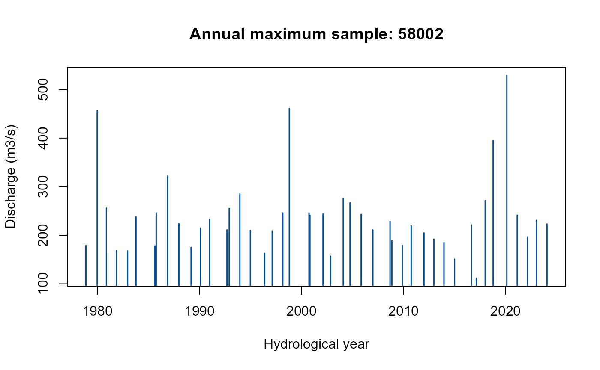
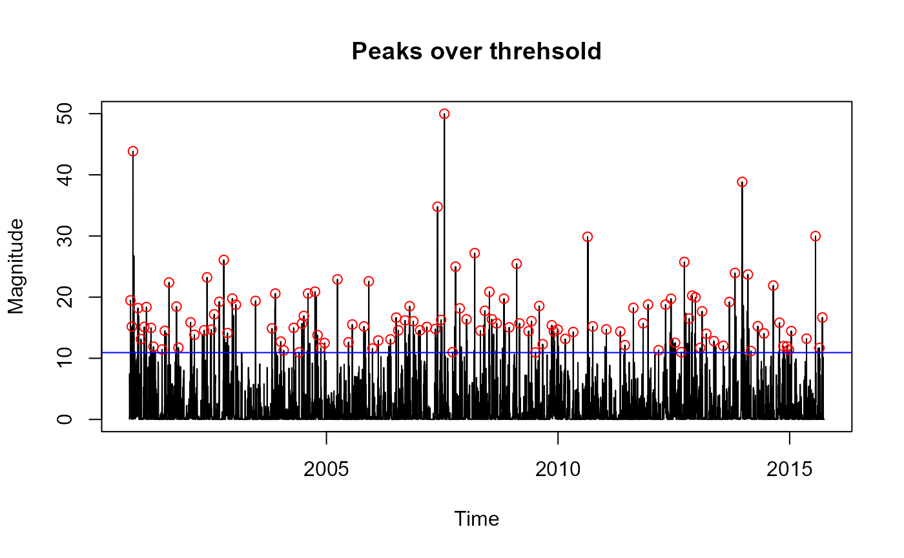
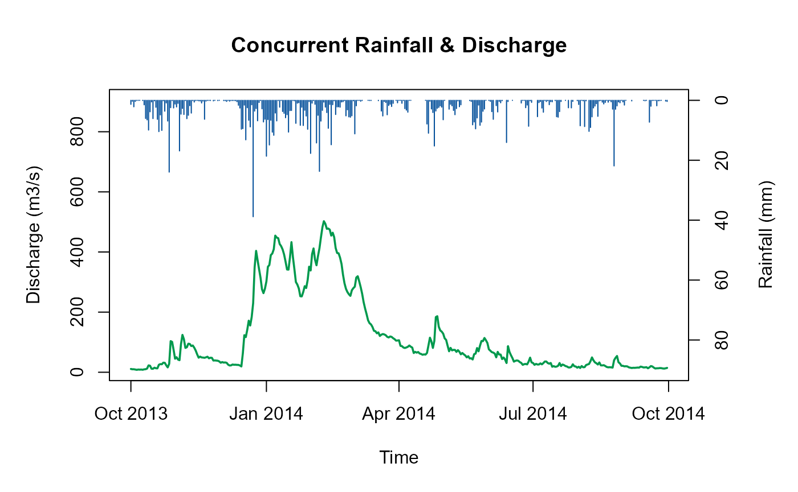
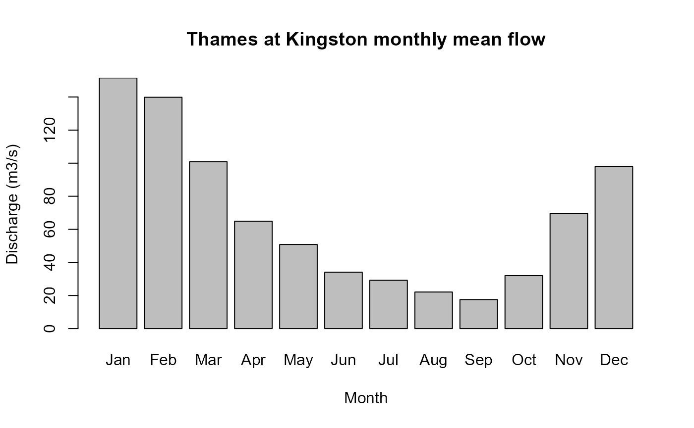
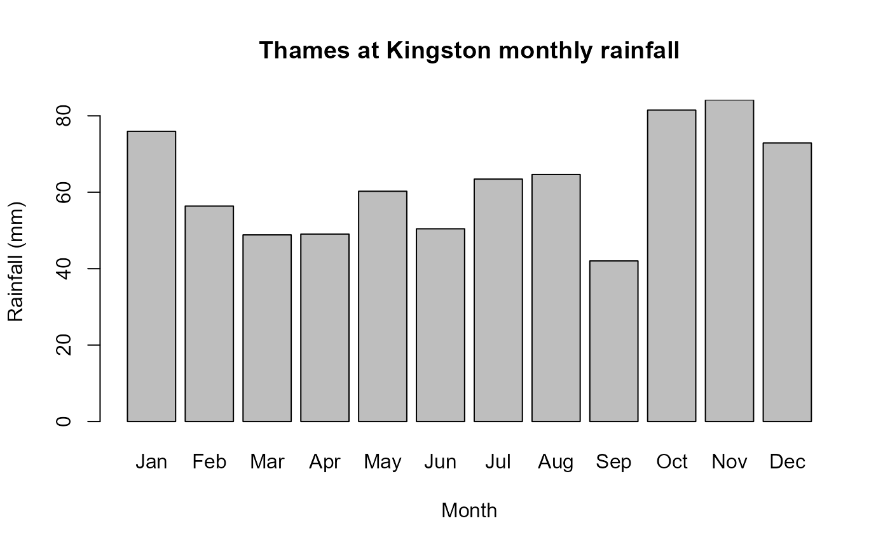
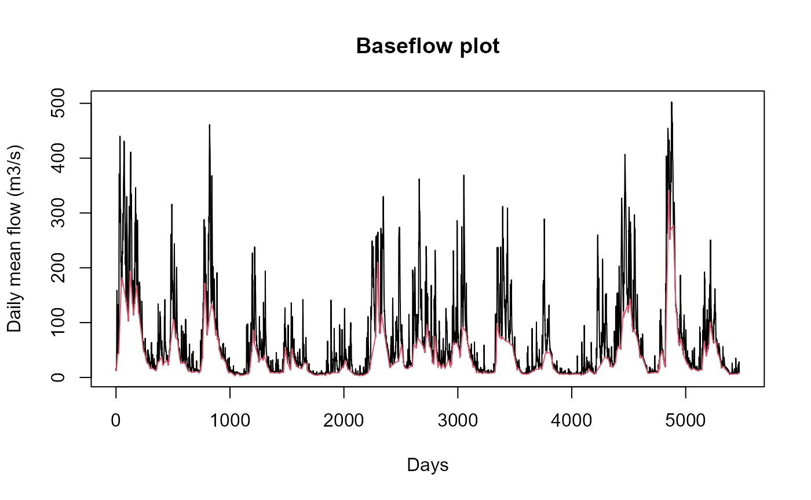
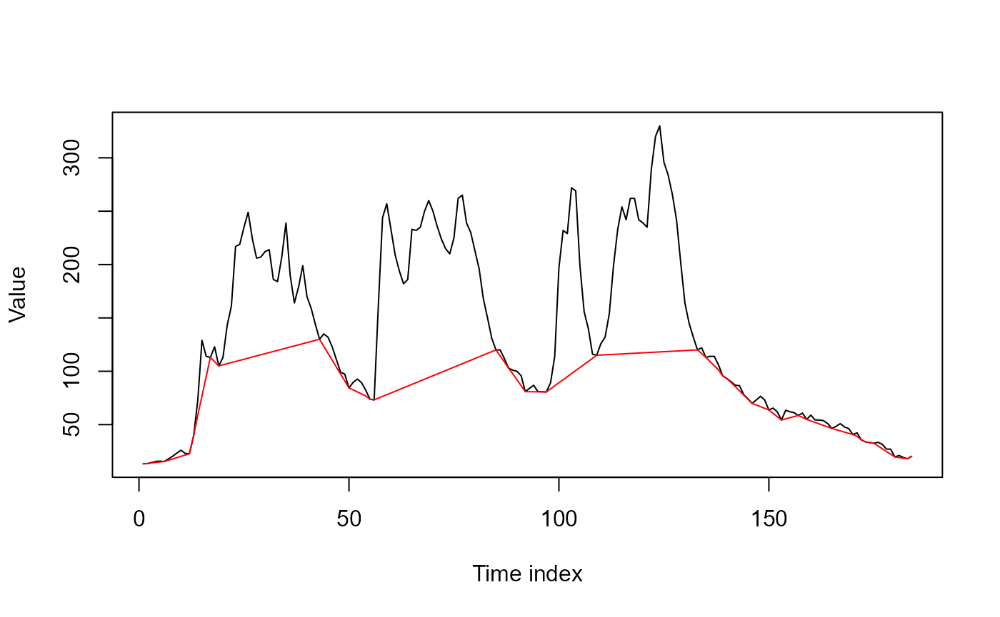
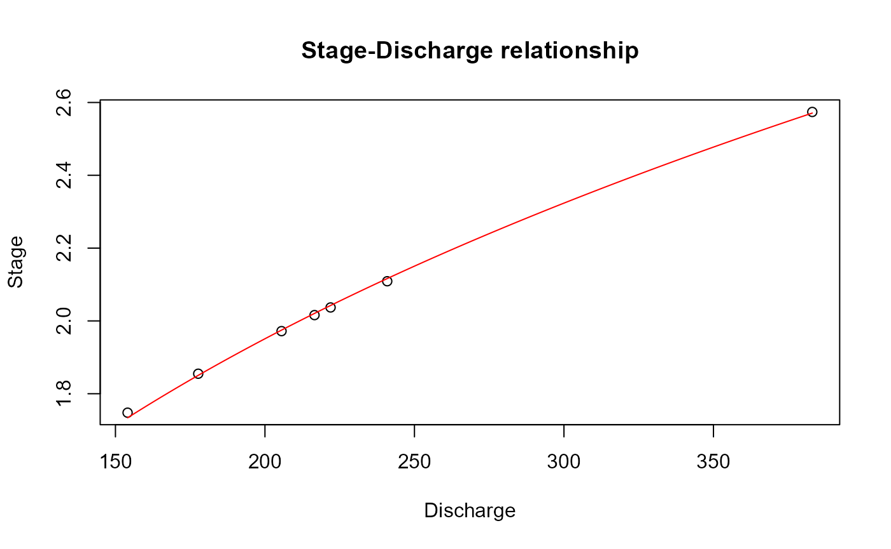
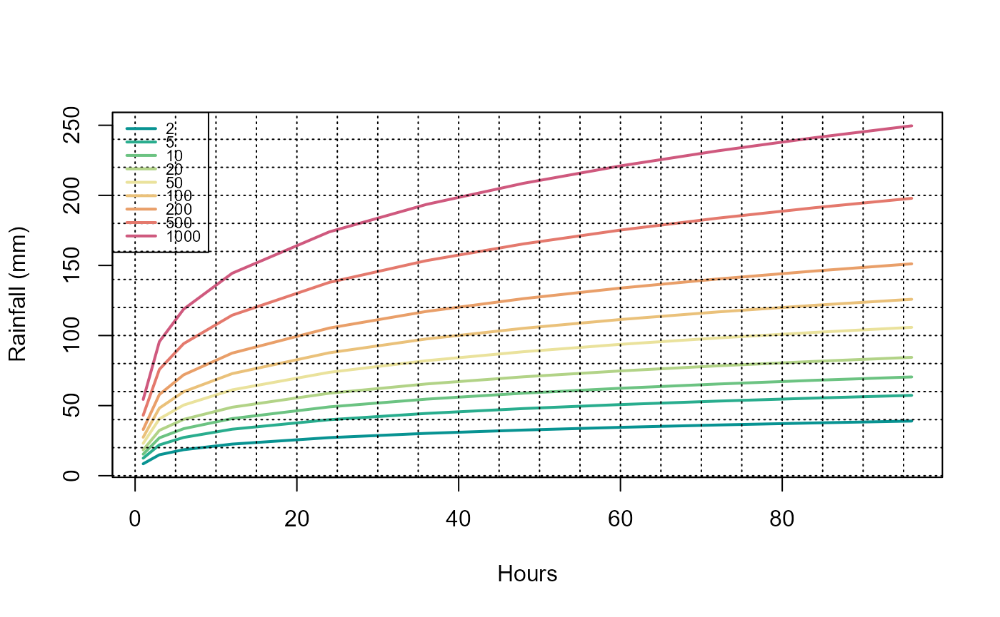

Data visualisation
Data-visualisation.RmdThe UKFE package offers a range of functions that can produce plots. Some of these help visualise data prior to analysis, while others plot results. Examples can be seen throughout the other articles. The examples in this article are from the functions’ help files; these also contain further details about each function.
We will start by loading the UKFE package:
library(UKFE)Plotting flow and rainfall data
The following functions can be used to plot annual maxima (AMAX) and peaks over threshold (POT) data:
-
AMplot(): Produces a bar plot of AMAX data.

-
POTextract()andPOTt(): Plot a hydrograph with POT data shown. Note that these functions extract the data and then plot as a handy by-product. They cannot be used to plot POT data once extracted.
# Extract POT flows for the Thames at Kingston (NRFA gauge 39001) and plot. Note that
# the indexing 'ThamesPQ[, c(1, 3)]' is necessary because the date is in the first
# column of the 'ThamesPQ' data frame and the flow is in the third.
ThamesQPOT <- POTextract(ThamesPQ[, c(1, 3)], thresh = 0.9, Plot = TRUE)
#> [1] "Peaks per year: 1.867263"
# Extract POT rainfall for the Thames at Kingston (NRFA gauge 39001) and plot. Note that
# the indexing 'ThamesPQ[, 1:2]' is necessary because the date is in the first column
# of the 'ThamesPQ' data frame and the rainfall is in the second.
ThamesPPOT <- POTt(ThamesPQ[, 1:2], threshold = 0.95, div = 14, Plot = TRUE)
-
HydroPlot(): Plots concurrent precipitation and discharge from a time series, with a choice of date range (defaulting to all the data).
# Plot the 2013 water year precipitation and discharge for the Thames at Kingston
# (NRFA gauge 39001), adjusting the closeness of the precipitation and discharge
# on the y-axis to 1.8.
HydroPlot(ThamesPQ, From = "2013-10-01", To = "2014-09-30", adj.y = 1.8)
-
MonthlyStats(): Derives monthly statistics from a time series. There is an option to plot these.
# Calculate the mean flows for each month for the Thames at Kingston (NRFA gauge 39001)
# and set the plot title using the 'main' argument
QMonThames <- MonthlyStats(ThamesPQ[, c(1, 3)], Stat = mean, ylab = "Discharge (m3/s)",
main = "Thames at Kingston monthly mean flow", Plot = TRUE)
# Calculate the monthly sums of rainfall for the Thames at Kingston and set the plot
# title using the 'main' argument
PMonThames <- MonthlyStats(ThamesPQ[, c(1, 2)], Stat = sum, ylab = "Rainfall (mm)",
main = "Thames at Kingston monthly rainfall", Plot = TRUE)
-
BFI(): Calculates the baseflow index from a daily mean flow series and plots the flow time series (black) and the associated baseflow (red).
# Calculate the BFI from daily discharge at Kingston upon Thames (which is in the
# third column of the 'ThamesPQ' data)
BFI(ThamesPQ[, 3])
#> [1] 0.5814248-
FlowSplit(): Separates baseflow from runoff (intended for event-scale rather than long-term flow series). Plots the flow time series in black and the baseflow in red.
# Extract a wet six-month period at the Thames at Kingston (NRFA gauge 39001) during
# the 2006-2007 water year (flow is in the third column of ThamesPQ)
ThamesQ <- subset(ThamesPQ[, c(1, 3)], Date >= "2006-11-04" & Date <= "2007-05-06")
# Apply the flow split with default settings
QSplit <- FlowSplit(ThamesQ$Q)
-
DesHydro(): Extracts a mean hydrograph from a flow series.
# Extract a design hydrograph from the Thames at Kingston (NRFA gauge 39001) daily
# mean flow and print the resulting hydrograph
ThamesDesHydro <- DesHydro(ThamesPQ[, c(1, 3)], EventSep = 10, N = 10)![Time series plot showing a black line representing the averaged design hydrograph, derived by aligning individual hydrographs on their peak flow and then averaging. The observed hydrographs are shown as coloured and patterned lines. The x-axis represents time and the y-axis shows scaled discharge. The individual hydrographs vary considerably: some display additional smaller peaks around the main one, while others differ in steepness and shape. In general, hydrographs with higher pre-peak discharge also exhibit higher post-peak discharge. All converge at the peak, and the overall mean hydrograph follows the typical triangular, inverted-V shape.](Data-visualisation_files/figure-html/unnamed-chunk-10-1.png)
-
FlowDurationCurve(): Plots flow duration curves for a single flow series or from multiple flow series. These can be winter, summer or annual curves.
# Plot a flow duration curve for the Thames at Kingston (NRFA gauge 39001) using
# data from Oct 2000 to Sep 2015
FlowDurationCurve(ThamesPQ[, c(1, 3)])![Plot showing flow duration curves for a single flow series with seasonal variations. The x-axis shows the percentage of time flow is exceeded, and the y-axis shows discharge. The annual curve is shown as a black line, the winter curve as a blue line, and the summer curve as a green line. Winter flows are consistently highest, followed by annual, then summer. All curves follow the expected pattern of high discharges at low exceedance percentages and progressively lower discharges as exceedance percentages increase.](Data-visualisation_files/figure-html/unnamed-chunk-11-1.png)
-
Rating(): Optimises a power law rating equation from observed discharge and stage and plots the resulting rating curve.
# Make up some flow (Q) and stage data to act as gaugings
Q <- c(177.685, 240.898, 221.954, 205.55, 383.051, 154.061, 216.582)
Stage <- c(1.855, 2.109, 2.037, 1.972, 2.574, 1.748, 2.016)
Observations <- data.frame(Q, Stage)
# Apply the rating function
Rating(Observations)
#> $Parameters
#> [1] 5.6020901 0.9504756 3.3562578
#>
#> $`Discharge as a function of stage`
#> [1] "Q = 5.602(h+0.95)^3.356"
#>
#> $`Stage as a function of discharge`
#> [1] "h = ((Q/5.602)^(1/3.356))-0.95"-
DDFImport()andDDFExtract(): Plot depth-duration-frequency curves. The former imports the depth-duration-frequency 2013 or 2022 results from XML files from either the FEH Web Service or the NRFA Peak Flow Dataset. The latter derives depth-duration-frequency curves from a rainfall time series (assuming that the AMAX data follow a GEV distribution).
# Extract 15-minute rainfall from the St Ives (Cambridgeshire) rain gauge
StIves <- GetDataEA_Rain(WISKI_ID = "179365", Period = "15Mins", From = "2022-01-01", To = "2025-01-31")
# Apply the DDF function.
DDFExtract(StIves)
#> Hrs X2 X5 X10 X20 X50 X100 X200 X500 X1000
#> 1 1 8.5 12.5 15.4 18.4 23.1 27.4 32.9 43.1 54.4
#> 2 3 14.9 22.0 27.0 32.3 40.5 48.2 57.9 75.8 95.6
#> 3 6 18.5 27.3 33.5 40.2 50.4 59.9 71.9 94.2 118.8
#> 4 12 22.5 33.2 40.8 48.8 61.2 72.8 87.5 114.5 144.4
#> 5 24 27.2 39.9 49.1 58.8 73.7 87.7 105.3 137.9 173.9
#> 6 36 30.2 44.4 54.6 65.4 82.0 97.6 117.2 153.4 193.5
#> 7 48 32.6 47.9 58.9 70.5 88.4 105.2 126.3 165.4 208.6
#> 8 60 34.5 50.7 62.4 74.8 93.7 111.4 133.8 175.2 221.0
#> 9 72 36.2 53.2 65.4 78.4 98.2 116.8 140.3 183.7 231.7
#> 10 84 37.6 55.4 68.1 81.6 102.2 121.6 146.0 191.2 241.2
#> 11 96 39.0 57.3 70.4 84.4 105.8 125.8 151.2 197.9 249.6Plotting results
The following functions can be used to plot results from functions used in Flood Estimation Handbook (FEH) Statistical or Revitalised Flood Hydrograph (ReFH) analyses. Examples can be seen in the respective articles.